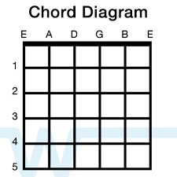
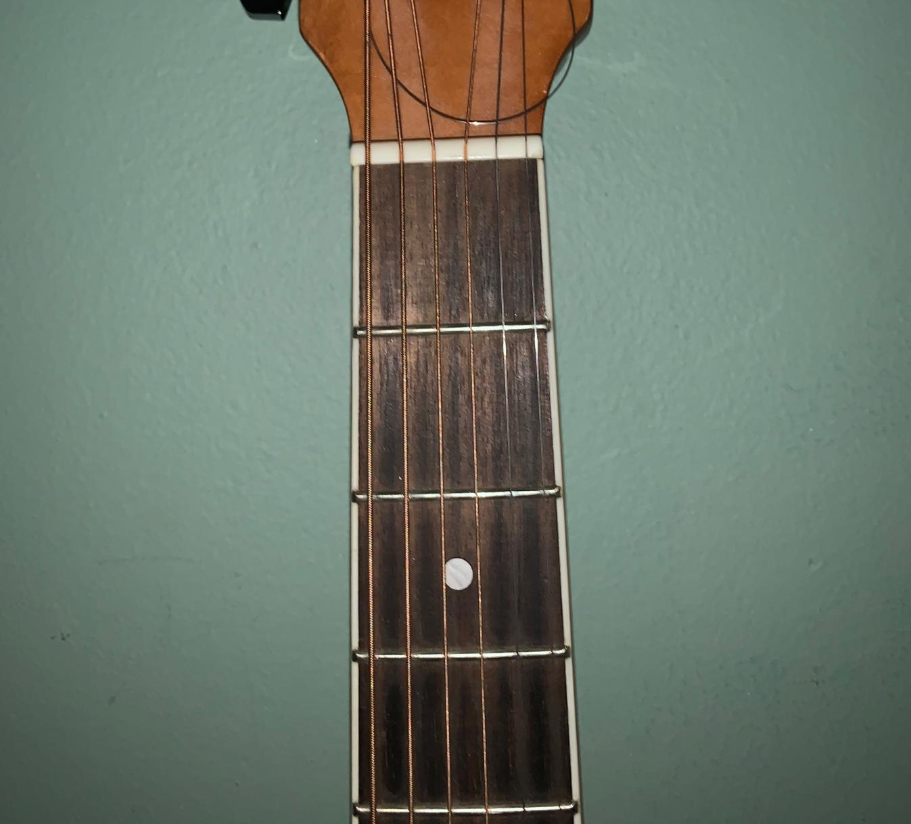
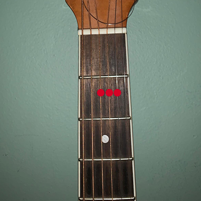
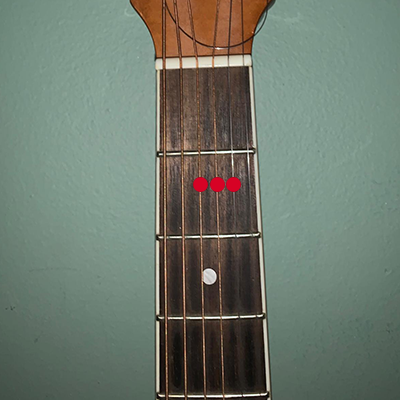
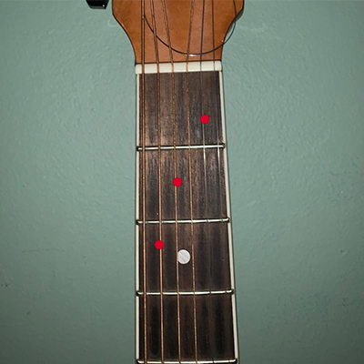
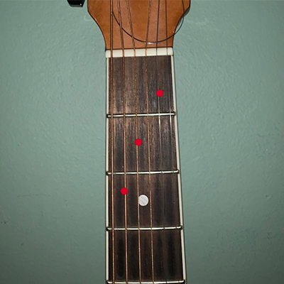

How to Read Chord Diagrams
In order to learn guitar, you need to learn how to read chord diagrams. Chord diagrams tell you where to place your fingers so that you can sucessfully play a specific chord. Unlike sheet music, chord diagrams are very easy to follow and understand.
 Here is what a guitar diagram looks like (left) . Notice how it is depicting a guitar fret board (as seen on the right) . The horizontal lines are the frets and the vertical lines are the strings, aptly labeled.
Let's Play Some Chords
Let's begin by playing the 'A' Chord.
 

A
The three red dots tell you that you need to place three separate fingers on those places. That's it! Make sure you press down on it firmly and comfortably, so that the strings are pressing against the fret bars. If you don't do this, it will sound very muted and buzzy. Now, with your other hand, strum quickly, and you should hear something like this:
It doesnt matter which finger goes on which position. If you can't quite figure out where to put your fingers, search up pictures of people playing the specific chord you want.
In this chord, you would most likely put your index finger on the D string, middle finger on the G, and ring finger on the B.
Now try the C chord
 

C
Bar Chords
Bar chords are chords that require you to press on all the strings of a certain fret, essentially "barring" it. This is usually done with the whole index finger.

F
Here's what the F chord looks like. Notice how the person in the video "bars" the first fret with his index finger.
Go back to top